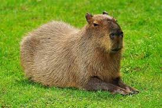

Capivara
Em 14 de setembro se comemora o Dia da Capivara, exemplar da fauna nativa da América do Sul que é um dos símbolos da região. Adaptáveis, elas desenvolveram comportamentos para conviver com os humanos e encarar a vida nas cidades.
Muito sociáveis e versáteis, as capivaras são um exemplo de animais que tiveram que mudar seus comportamentos para sobreviver às mudanças em seus habitats naturais – e hoje prosperam também em urbanos. No Dia da Capivara, celebrado em 14 de setembro, a National Geographic investiga a bem-sucedida saída que o maior roedor do mundo encontrou para não desaparecer do meio ambiente.
“A capivara se tornou o que chamamos de um animal generalista, aprendendo a socializar com a presença humana e se adaptar às cidades”, diz Marcos Vinícius Rodrigues, biólogo especialista em fauna silvestre, com foco em plano de manejo de capivaras, e consultado para esta reportagem. É cada vez mais comum encontrar o maior roedor do mundo convivendo com as pessoas em áreas urbanas perto de rios ou lagoas, em locais arborizados. Mas elas não viraram vizinhas dos humanos por comodidade. “O avanço antropogênico (humano) pelos habitats naturais das capivaras, com desmatamento, uso do terreno para plantações e construções, as obrigaram a se adaptar para sobreviver”, explica Rodrigues.
"Habitat da capivara"
As capivaras ocorrem em toda a América do Sul, com exceção do Chile, e em alguns territórios da América Central e do Norte, indo até o sul dos Estados Unidos. “Costumam ser encontradas em matas e campos próximos à cursos d’água e com abundância de alimento”, conta Rodrigues, reforçando como viviam esses animais antes de terem seus habitats ameaçados.